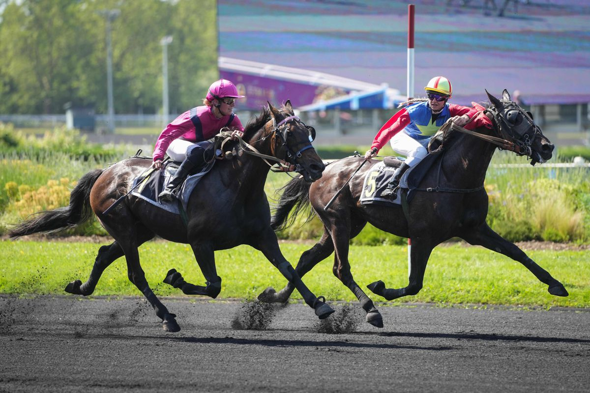

Hello Jade Rush resiste a Krack Cléa en el Prix Baptiste Ferchaud de Vincennes
La yegua Hello Jade Rush se impuso en el Prix Baptiste Ferchaud celebrado en el hipódromo de París-Vincennes, resistiendo en la llegada el envite del favorito Krack Cléa en una definición muy apretada.

Foto: paris-turf.com
Hello Jade Rush firmó su decimosegunda victoria en carrera tras imponerse en el Prix Baptiste Ferchaud, primera prueba del programa del martes en París-Vincennes. La representante de la cuadra de Michel Donio no ganaba desde junio de 2024, y selló el triunfo con la conducción de la jockey aprendiz Lou-Ann Lecoq, que sumaba así su primera victoria en la cendrée parisina (treinta y seis éxitos en total en su trayectoria).
La hija del semental Pagalor rodó en el cuerpo del pelotón siguiendo la estela del animador Flash du Biwetz durante el recorrido. Su jockey pudo despejarla al subir la recta opuesta, y la yegua se escapó en el último giro, aguantando por escaso margen la llegada de Krack Cléa. «Tenía muchas ganas de irse, así que la dejé hacer», explicó Lecoq tras el triunfo. «Pensé que había arrancado demasiado pronto, pero lo hizo muy bien. Es mi séptima victoria con ella, así que es genial. Es una yegua superamable.»
Krack Cléa, preparado por Maxime Bézier, se quedó a las puertas del triunfo tras otra excelente remontada final. Su compañero de cuadra Igo Cléa completó el podio en tercera posición.
— Redacción de Galope al Día